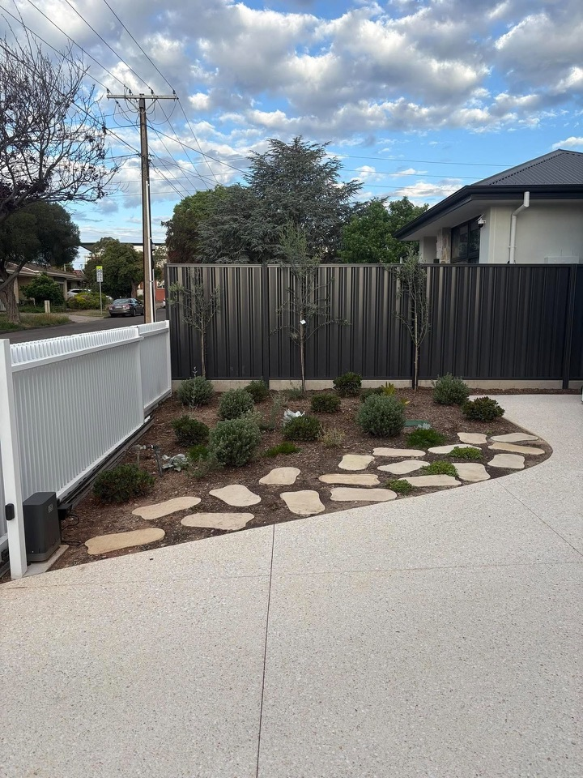
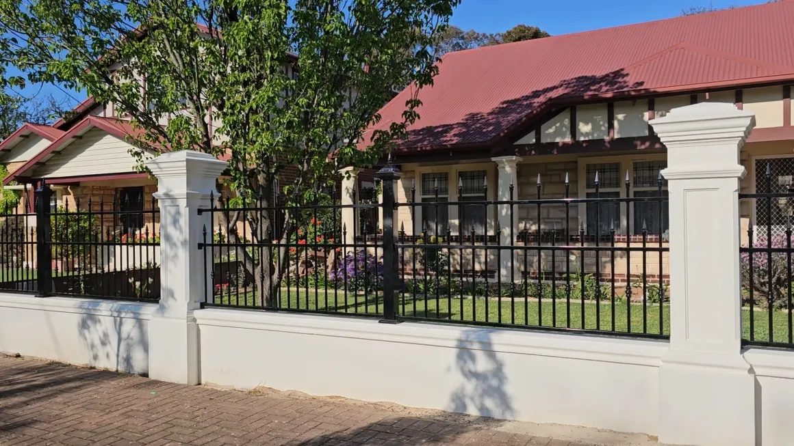
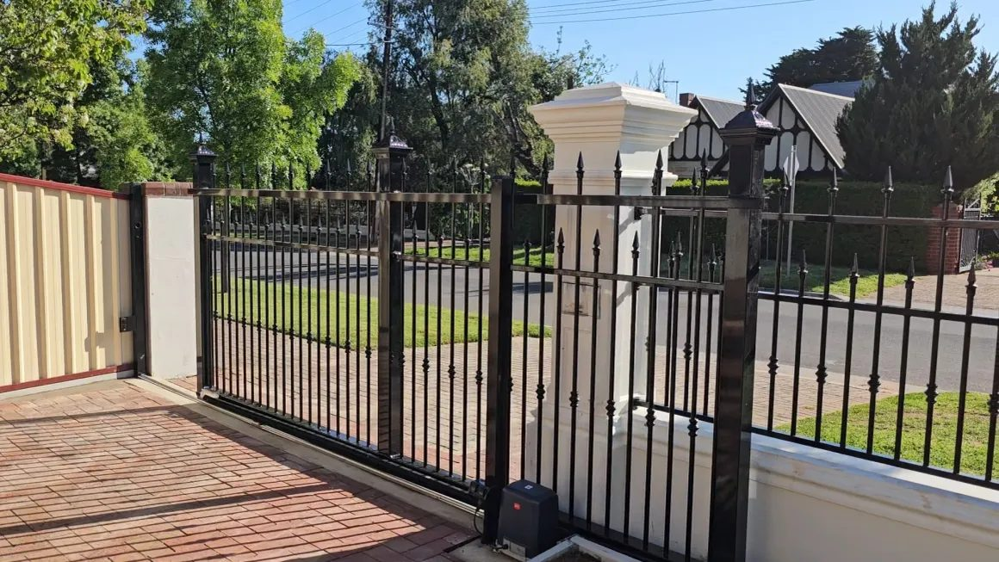

Colorbond fencing
Steel boundary and privacy fencing in your choice of Colorbond colour. It's low maintenance and gives you a clean, straight line along the boundary. We can add concrete plinths and slat toppers for extra height and privacy.
Colorbond, timber, aluminium, glass and steel fencing, plus every kind of gate. Made and installed by a fencer with about 40 years on the tools.

We make and install fences and gates of every type: new boundaries, front fences, pool fencing and gates, plus the repairs and odd jobs in between.
Steel boundary and privacy fencing in your choice of Colorbond colour. It's low maintenance and gives you a clean, straight line along the boundary. We can add concrete plinths and slat toppers for extra height and privacy.

Slat and picket styles for front fences, feature screens and pool areas. Aluminium won't rot, and it keeps a crisp, tidy look with very little upkeep.

Frameless glass on spigots, or semi-frameless with aluminium posts, for pools, decks and courtyards. You keep the view and the yard stays open and bright.

Wrought-iron style, spear-top and steel blade fencing, made to fit between your piers and on top of plinth walls and brickwork. It suits Adelaide's bungalows and character homes.

Pedestrian gates, swing and sliding driveway gates, and automated or motorised gates. We make them to match your fence and hang them so they open and close smoothly.
Traditional paling fences and modern timber slat screens for boundaries, front yards and privacy. A good choice when you want a natural, warm look.
Leaning posts, storm damage, sagging gates, broken latches, and the small jobs that have been on the list for a while. Call and ask. If it's fence or gate related, we can probably help.
Recent fences and gates around Adelaide. Tap a photo to see it bigger.
I'm Mario Pengue, and fencing is what I do.
I started out in Sydney and I've been building fences for about 40 years. These days I'm based in Adelaide. In that time I've done just about every type of fencing there is: Colorbond, timber, aluminium, glass, steel and wrought iron, plus all kinds of gates, from a simple side gate to a motorised sliding gate across the driveway.
I make and install fences and gates, and I'm happy to take on the odd jobs too. If you're not sure what you need, give me a call or text me a photo and we'll work it out together. Quotes are free.
We work all over metro Adelaide: north, south, east and west.
By appointment. Call us to talk about your job and where it is.
Tell us a bit about the job and we'll get back to you.